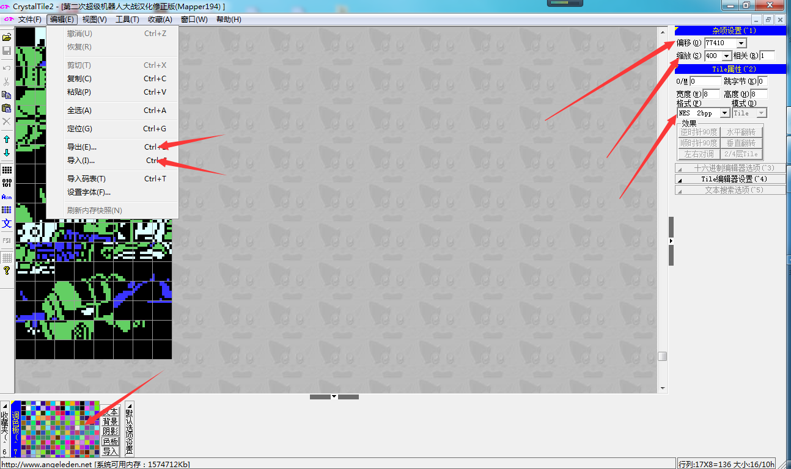
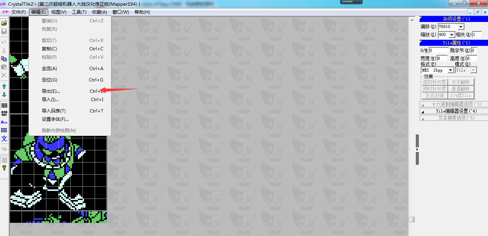
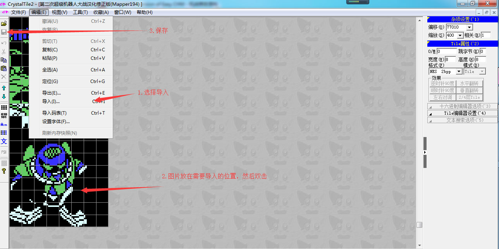
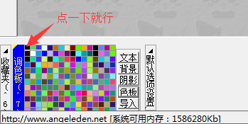

CT2就是一个支持图像数据导入导出的工具，一般我们用的比较多的就是导入导出两个命令。操作界面如下图所示

右边的偏移指的是ROM的地址，根据图库的编号所对应的地址，输入，回车，即可跳转到相应的ROM地址。
缩放指的的可视界面的大小，一般设定为400，当然可根据自己的喜好进行调整。
格式指的是打开的ROM文件的格式（CT2支持众多ROM文件的修改），我们修改的NES文件，所以选择NES 2BPP，在查看字库的时候选择单色 1BPP。
关于如何调整可视界面可观察到的图像长度，按SHIFT+上下左右即可调整。
关于导出:导出的时候鼠标左键框住需要导出部分，此时会有一个灰色方框显示。然后选择-编辑-导出即可。

关于导入：导入的时候选择编辑-导入，选择你需要导入的图片（BMP格式），然后放在需要导入的位置，双击，然后保存即可。

图中左下角为调色板，设定在CT2中操作时的调色板，一般我们选择第一组颜色，即黑白绿蓝，设定方法为点击左上角的小方块即可。如下图所示
